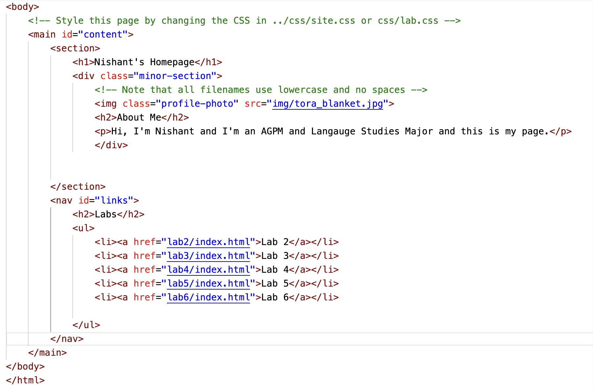
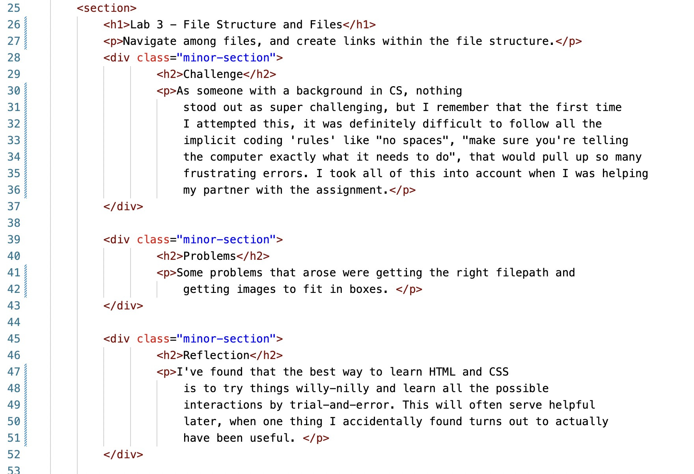
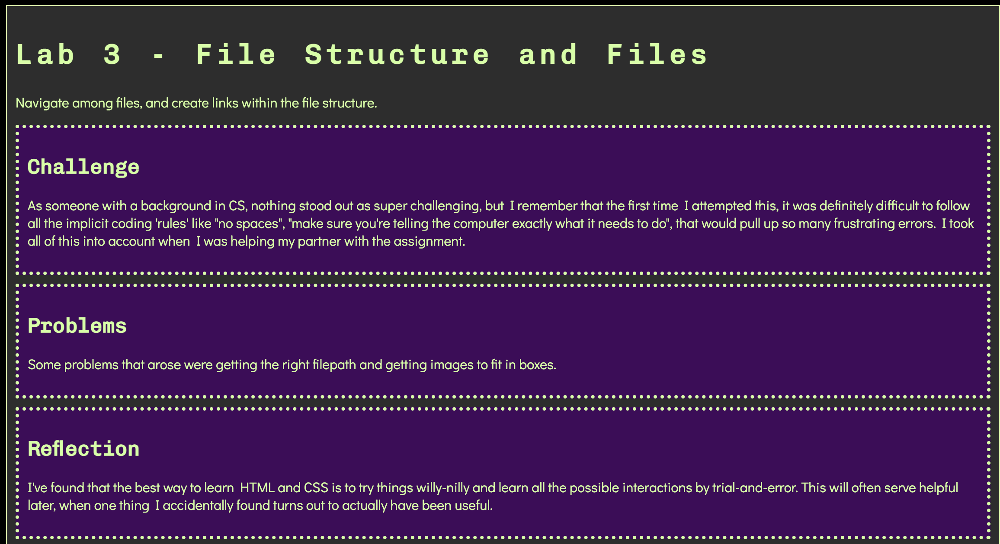

Lab 3 - File Structure and Files
Navigate among files, and create links within the file structure.
Challenge
As someone with a background in CS, nothing stood out as super challenging, but I remember that the first time I attempted this, it was definitely difficult to follow all the implicit coding 'rules' like "no spaces", "make sure you're telling the computer exactly what it needs to do", that would pull up so many frustrating errors. I took all of this into account when I was helping my partner with the assignment.
Problems
Some problems that arose were getting the right filepath and getting images to fit in boxes.
Reflection
I've found that the best way to learn HTML and CSS is to try things willy-nilly and learn all the possible interactions by trial-and-error. This will often serve helpful later, when one thing I accidentally found turns out to actually have been useful.
Results
this is a screenshot of source code showing html of the list
this is a screenshot of source code showing html of the website lab3
this is a screenshot of source code showing resulting website of lab3